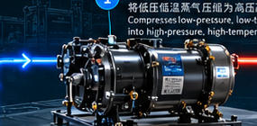
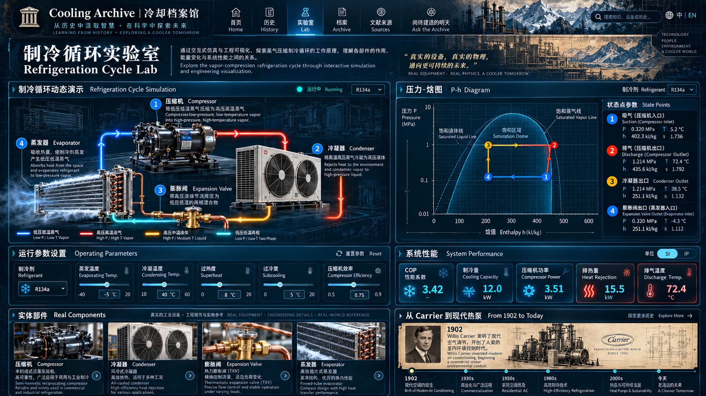
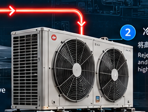
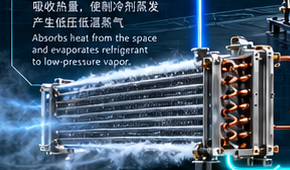

Real component 01压缩机 · Compressor金属壳体、驱动机构与吸排气接口。负责提升制冷剂蒸气压力与温度。
从冰窖、湿帘与人工造冰，到压缩机、热泵和数据中心。制冷空调史不只是“谁发明了空调”，而是人类如何一步步学会搬运热、控制湿度，并把舒适变成现代基础设施。
拖动、点击节点，观察同一时期的需求、制冷方式、制冷剂、压缩机与环境代价如何互相推动。
在机械制冷出现之前，人类已经拥有复杂的降温经验：储冰、地下空间、夜间通风、湿帘与蒸发。真正的技术分水岭，是把“自然里存在的冷”变成可以随时生产、搬运与控制的冷。
参考现代制冷循环模拟器的交互思路：左边看回路里发生什么，右边看 P-h 图如何变化；拖动工况，观察温差、压比和 COP 的联动。




温度提升变大，高低压侧的压差/压比通常增大，压缩机单位质量功上升；这个模拟器把这种趋势直接画出来。
动画告诉你设备在做什么；P-h 图告诉工程师每个状态点的热力学路径与能量差。
初学者看“热从哪里到哪里”；工程师可以切换到压力、焓与状态变化视图。先理解能量方向，再进入公式。
给制冷剂做功，让它进入高压高温状态。
制冷剂把从室内带出来的热，加上压缩机输入的功，排给室外空气。
压力骤降，制冷剂准备在更低温度下蒸发。
制冷剂从室内空气中吸热，蒸发后回到压缩机。
制冷剂史是最能体现工程权衡的主线之一：安全、效率、成本、压力、材料兼容性、臭氧层与气候影响，几乎从来不能同时最优。
工业制冷的重要早期工质。性能与成熟度较高，但毒性、材料与系统管理要求不能忽略。
化学稳定、可制造且使用方便，推动家用与商业制冷扩张；后来被发现与臭氧层损耗相关。
用于替代部分 CFC。臭氧层问题缓解后，温室效应问题又成为下一轮技术迁移的重要驱动力。
天然工质重新受到关注。高压、可燃性或安全边界等工程约束，成为系统设计的一部分。
现代选择越来越像多目标优化：效率、安全、法规、生命周期影响与应用场景共同决定方案。
把这条逻辑放到网页里，比单纯罗列“发明年表”更能解释为什么 HVAC 技术会不断迭代。
把人物放回技术链：他/她到底解决了哪个具体问题？又依赖了哪些前人的工作？
常被称为“现代空调之父”，但更准确的入口是空气调节工程：温度与湿度控制如何服务工业生产。
连接热力学、气体液化与工业制冷的重要人物。适合用来讲“科学原理如何变成工业系统”。
制冷史并非单一英雄史。压缩机、换热器、密封、电机、控制与材料同时进步，才使系统真正可靠。
首页是博物馆入口，下面这些入口则把内容分层，方便不同背景的读者直接进入自己的路径。
这是未来知识库的入口。当前版本是本地原型：它把问题匹配到档案节点。正式版可以接入 RAG，让回答始终回到专利、论文、档案与设备资料。
你看到的不是一个“万能聊天框”，而是未来知识库的检索入口：问题 → 档案节点 → 来源 → 深度阅读。
每个节点以后都可以同时连接年份、人物、设备、制冷剂、原理和来源。这样网站可以不断扩展，而不是越做越乱。
事件、人物、设备、技术突破与争议。
year · title · context · claims循环、压缩机、换热器、制冷剂与性能参数。
state · equation · diagram · tradeoff专利、论文、标准、博物馆档案与图片授权。
source · date · archive · rights让一个结论可以回溯到具体证据，而不是只相信一段 AI 生成文字。
claim → source → confidence